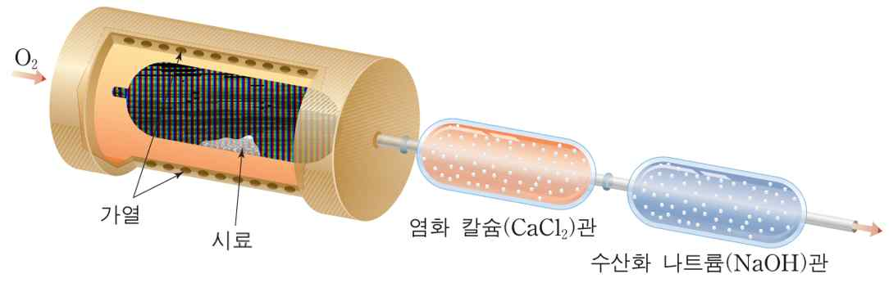

문제 1
1-1
아래 그림의 원소 분석 실험 장치를 이용하면 미지 시료를 구성하는 원소 간의 질량비를 통해 실험식을 결정할 수 있다. 이러한 원리를 간단히 설명하시오.

1-2
다음은 암모니아의 합성반응을 나타낸 화학반응식이다.
\[\text{N}_2(g) + 3\text{H}_2(g) \rightleftharpoons 2\text{NH}_3(g)\]
(1) 어떤 온도에서 1 L 의 용기에 질소 기체 2몰과 수소 기체 5몰을 넣고 화학반응을 진행하였더니 3몰의 암모니아 기체가 생성되었다. 이 온도에서의 평형상수는 얼마인가?
(2) (1)번과 동일한 조건에서 질소 기체 0.2몰과 수소 기체 0.5몰, 암모니아 기체 2몰을 섞으면 반응은 정반응과 역반응 중 어느 쪽으로 진행할까?
(3) 암모니아의 생성열이 -46.1 kJ/mol 임을 고려하여 위 반응을 이용하여 암모니아 기체의 수득률을 높일 수 있는 방법을 나열해보시오.
1-3
물질의 끓는점과 녹는점은 분자 간에 작용하는 상호작용에 의해서 크게 좌우되는데 대표적인 분자 간 상호작용 3가지를 설명하고, 힘의 크기 순으로 나열하시오.